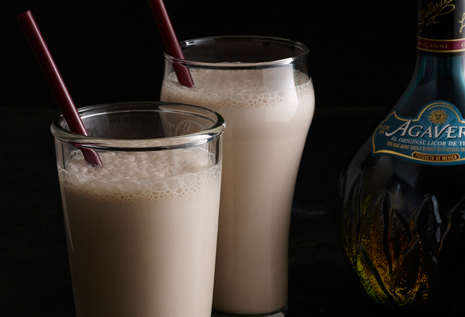
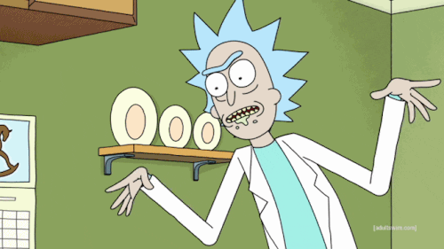

Even the smartest human in the multiverse has a sweet-tooth every once and a
while.
After destroying countless worlds, sometimes getting drunk the regular way
just won't do.
Now you can wash down the guilt with this delicious treat Rick style.
Rumor has it that this is the drink that made the cow jump over the Moon!
Ingredients
- 1/2 cup whole milk
- 1 teaspoon vanilla extract
- 3 tablespoons Agavero Tequila
- 1 tablespoon Gin
- 1/2 a cup of Guinness
- 2 tablespoons malted milk powder
- 3 1/4 cup good quality vanilla bean ice cream
- Whip cream for topping
Recipe Instructions:
-
Pour the milk, vanilla extract, Agavero tequila (Any tequila will do!), gin, Guinness, and malted
milk powder in the blender and puree until completely blended.
-
Incorporate the ice cream and blend on low speed, just until combined.
-
Pour into a milkshake glass and serve along with a straw or large
spoon.
-
Sit back and relax as the multiverse melts away. Repeat recipe until
desired state of inebriation is achieved.
Stay Schwifty my friends...

Portal to the top of page
Return to home